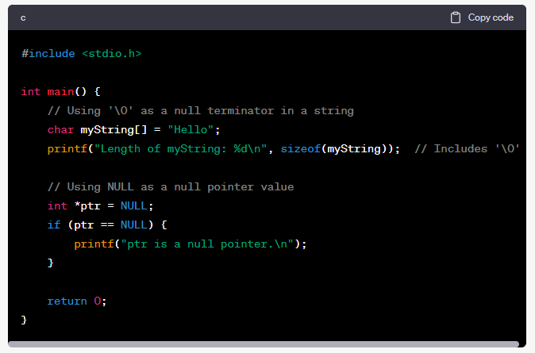

`'\0'` and `NULL` are used for different purposes in C and have specific meanings:
1. **`'\0'` (Null Terminator):** This is a character constant that represents the null terminator character, which has an ASCII value of zero. It is used to mark the end of strings in C. When you create a string using double quotes (e.g., `"Hello"`), the compiler automatically appends a `'\0'` at the end of the string to indicate its termination. This is crucial for functions that work with strings, as they rely on encountering the null terminator to know where the string ends.
2. **`NULL`:** `NULL` is a predefined macro in C that represents a null pointer value. It's often used to initialize or compare pointer variables to indicate that they are not pointing to any valid memory location. `NULL` is typically defined as `(void*)0` or as an integer constant with a value of zero, depending on the implementation.
It's important to note the difference between these two:
- `'\0'` is used in the context of strings to represent the null terminator character that marks the end of a string.
- `NULL` is used in the context of pointers to represent a null pointer, indicating that the pointer doesn't point to any valid memory location.
Here are some examples to illustrate their usage:

As for alternatives, when working with pointers, `NULL` is the standard way to represent a null pointer. There's no need to use alternatives since `NULL` is a widely recognized and accepted convention.
When working with strings, you typically rely on the null terminator (`'\0'`) automatically added by the compiler, and there's no common alternative for marking the end of strings. Using `'\0'` as the null terminator is the standard practice in C programming.